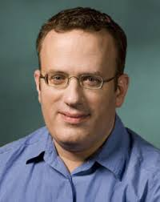

Eich grew up in Pittsburgh; Gaithersburg, Maryland; and Palo Alto, and he attended Ellwood P. Cubberley High School, graduating in the class of 1979. He received his bachelor's degree in mathematics and computer science at Santa Clara University, and he received his master's degree in 1985 from the University of Illinois at Urbana–Champaign. Eich is Roman Catholic.
He began his career at Silicon Graphics, working for seven years on operating system and network code. He then worked for three years at MicroUnity Systems Engineering writing microkernel and DSP code.

Eich started work at Netscape Communications Corporation in April 1995. Eich originally joined intending to put Scheme "in the browser", but his Netscape superiors insisted that the language's syntax resemble that of Java. As a result, Eich devised a language that had much of the functionality of Scheme, the object-orientation of Self, and the syntax of Java. He completed the first version in ten days in order to accommodate the Navigator 2.0 Beta release schedule, and was called Mocha, but renamed LiveScript in September 1995 and finally in a joint announcement with Sun Microsystems it was named JavaScript in December. Simultaneously, he designed the first SpiderMonkey engine for the Netscape Navigator browser at Netscape Communications. When Mozilla inherited the Netscape base code in 1998, it included this engine, which was written in the C programming language. It was then changed in JavaScript 1.5 to comply with the ECMA-262 standard. Eich continued to oversee the development of SpiderMonkey, the specific implementation of JavaScript in Navigator.

In early 1998, Eich co-founded the free and open source software project Mozilla with Jamie Zawinski and others, creating the mozilla.org website, which was meant to manage open-source contributions to the Netscape source code. He served as Mozilla's chief architect. AOL bought Netscape in 1999. After AOL shut down the Netscape browser unit in July 2003, Eich helped spin out the Mozilla Foundation.
In August 2005, after serving as a lead technologist and as a member of the board of directors of the Mozilla Foundation, Eich became chief technical officer (CTO) of the newly founded Mozilla Corporation, meant to be the Mozilla Foundation's for-profit arm. Eich continued to "own" the Mozilla SpiderMonkey module, its JavaScript engine, until he passed on the ownership of it to Dave Mandolin in 2011.
On March 24, 2014, Mozilla made the decision to appoint Eich as CEO of Mozilla Corporation. The appointment triggered widespread criticism due to Eich's past political donations – specifically, a 2008 donation of $1,000 to California Proposition 8, which called for the banning of same-sex marriage in California, and donations in the amount of $2,100 to Proposition 8 supporter Tom McClintock between 2008 and 2010. The Wall Street Journal initially reported that, in protest against his coming appointment, half of Mozilla's board (Gary Kovacs, John Lilly, and Ellen Siminoff) stepped down, leaving Mitchell Baker, Reid Hoffman, and Katharina Borchert. CNET later reported that of the three board members who had left, only Lilly left due to Eich's appointment. Lilly told The New York Times, "I left rather than appoint him", and declined to elaborate further.
On March 26, 2014, Eich expressed "sorrow for causing pain" and pledged to "work with LGBT communities and allies" at Mozilla. Some of the activists created an online campaign against Eich, with online dating site OkCupid automatically displaying a message to Firefox users with information about Eich's donation, and suggesting that users switch to a different browser (although giving them a link to continue with Firefox). CREDO Mobile collected more than 50,000 signatures demanding that Eich resign.
After 11 days as CEO, Eich resigned on April 3, 2014, and left Mozilla over his opposition to same-sex marriage. In his personal blog, he posted, "under the present circumstances, I cannot be an effective leader". Mozilla made a press release saying that board members tried to get Eich to stay in the company in a different role, but that he had chosen to sever ties for the time being.
Eich is the CEO of Brave Software, an Internet browser platform company that raised $2.5 million in early funding from angel investors. In January 2016, the company released developer versions of its open-source, Chromium-based and privacy-focused Brave web browser, which blocks ads and trackers, and features built-in Tor-connected tabs.
At Brave Software, Eich co-created the Basic Attention Token (BAT), a cryptocurrency designed for use in the Brave browser. BAT launched its ICO on May 31, 2017, and raised $35 million.